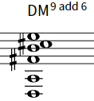
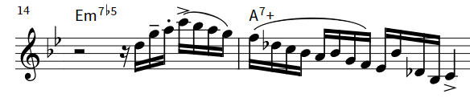
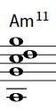
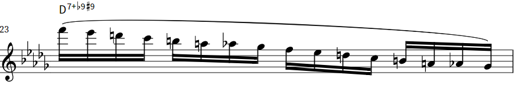
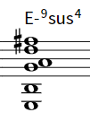

[Introduction] [Background] [Finding My Voice] [Performance] [What I Learned] [A Glimpse into the Future] [Acknowledgements] [Poster]
Introduction
This project is a celebration of one of my largest areas of growth in college: learning the guitar. Much of this project speaks to the question, “How does the guitar, an ancient, multicultural instrument, interpret jazz, a novel, fundamentally American art form?” A holistic answer is sought from three angles: (1) reflecting on my study of classical guitar (and other pre-jazz genres), (2) creatively arranging jazz standards, and (3) performing these arrangements.
The guitar is perhaps the most historically significant and ubiquitous instrument across cultures. When guitarists interpret contemporary music, they are bridging the eastern and western musical diasporas, as well as the past to the present. As a first-generation American, this project is of deep personal interest. While primarily exploring how the guitar interprets jazz, this project also sheds light on smaller, more personal questions: “How did the 20th and 21st century’s most notable jazz guitarists lead their lives?” “From where did they draw their musical inspiration?” “How did they balance their various cultural and professional identities in the composition and playing of this norm-defying music?”
Background
I was drawn to the guitar from an early age, largely due to my pre-school Spanish teacher Ms. María. She played a beautiful, yellow-golden classical guitar with nylon strings. I remember how magical it was to watch her effortlessly strum the strings. Unfortunately, my father refused to buy me a guitar at age 3, and my musical origins instead took root on piano.
My childhood was devoted to learning piano and bass guitar. When I began college, I was proficient at these instruments but felt that my heart was elsewhere. I first seriously laid my hands on a guitar in the fall of 2017 and immediately fell in love. That summer, I had been listening to the virtuosic guitarist Joe Pass and was determined to replicate his sounds. I figured out a few jazz voicings on my roommate’s acoustic guitar and learned how to “walk” a bassline while playing accompanying chords.
I enrolled in Prof. James Wilder’s Guitar I course the following summer, where I gained dexterity and finger independence and grew more comfortable playing solo. I also enjoyed learning about the cultural aspects of the guitar--its history, pedagogy, and evolution. I continued this journey by taking Dr. Madriguera’s Guitar II and Guitar Ensemble courses the following fall and spring. By the end of the spring 2019 semester, I began to feel more confident expressing myself on guitar.
Then, my guitar journey took a wonderful turn: overseas. Thanks to the support of the Eugene McDermott Scholars Program, I was able to travel to Spain with members of the UTD Guitar Ensemble to study classical guitar for two weeks. I treasure every moment of this experience. Spain is the birthplace of the modern classical guitar, and I learned so much about the history and building of the instrument while there. I also learned a lot about playing guitar in different contexts (solo, band, ensemble, duet, etc.). I made such wonderful friends in Spain (and am still in touch with them today) and enjoyed many late-night jam sessions.
When the COVID crisis materialized in the spring of 2020, I was forced to give up playing bass in various DFW-area bands and jazz groups. With nobody to play with, I felt my motivation shift away from the bass to the guitar. Over the next several months, my guitar skills sharpened tremendously. I developed my own right-hand technique, inspired by George Benson. My comfort with bebop vocabulary grew, and I taught myself many new voicings. I also explored blues guitar during this time and recorded a collection of songs called “Blues in June” Towards the end of the summer, I was also growing competent with other styles of guitar, including playing in open tunings (which resulted in the project “Ode to Friends”) and playing lap-style, like my friend Stephen Houpt.
Finding My Voice
Every great guitarist has a unique voice. Django Reinhardt's sound is known for a sharp attack, tremelo picking, and minor 6 voicings. B.B. King's sound is easily recognized by glissandos, bold entrances, and vibrato. George Benson's sound is defined by fast bebop lines, a dark tone (produced by a combination of his rest stroke technique and use of flatwound strings), and energetic scat singing.
In 2018-2019, I struggled to find my voice on guitar, frustrating me and almost convincing me to give up the instrument altogether. The main source of this frustration was an unsatisfactory right-hand technique. I felt lost between options: playing with classical technique, playing with a pick, playing with my thumb, playing with fingerpicks, etc. Since I did not own a guitar at that time, I was further confused by trying to decide which type of guitar I should pursue: classical nylon-string guitar, acoustic steel-string guitar, electric guitar, archtop jazz guitar, etc.
Classical technique (using P, I, M, and A) ended up being the most comfortable technique for me. I liked this technique because it allowed me to play a variety of styles with minimal technical adjustments. I could go between playing a bossa nova accompaniment and soloing without having to switch to pick, for example.
But I remained undecided about which type of guitar to pursue. In spring and summer of 2020, I was borrowing my friend Roma's acoustic guitar, but I wanted to sound more like George Benson and Bireli Lagrene by playing an archtop jazz guitar. My friend Tim Hicks kindly lent me his Ibanez Artcore guitar, on which I strung flatwound strings. I enjoyed the mellow, jazzy sound, but I felt unsatisfied by the guitar's limitations. Folk and bossa nova music, for example, sounded out-of-place on the electric instrument.
After much deliberation, I was finally convinced to pursue acoustic guitar by my friend Stephen Houpt. Stephen saw my potential in the acoustic instrument, but I think he was also tired of my indecisiveness. In November 2020, I bought my own acoustic guitar: a Canadian-made Seagull Artist Mosaic guitar. It has a beautiful cedar top, and the body and neck is fully carved wood. Equipped with a comfortable technique and a high-quality guitar, my voice quickly became defined by blues inflections, bebop vocabulary, folk articulations, and fusion-inspired chords.
A musical voice transcends technique and instrument choice: it is also defined by repeated musical thoughts, which one may call “musical character.” This “character” is something of a sum of our many influences. I discuss a few of my influences below.
Charlie Byrd has greatly influenced my approach to arranging pieces for solo guitar. He prioritizes rhythm and form in his improvisations, compelling the listener to engage in the creative process by imagining accompaniment. The strong sense of time follows the tradition of early blues and jazz music, much of which was inspired by 19th century marches, making his arrangements “easy on the ears,” unlike the arrangements of more modern jazz guitarists. I also admire how Byrd makes the classical nylon string guitar sing. The classical guitar's softer attack and faster decay makes solo guitar playing more “transparent,” but Byrd's clarity reveals his technical mastery. And Byrd, who helped introduce the bossa nova to the rest of the world, has influenced the way I feel this style.

This is a blues line that Charlie Byrd used heavily in his interpretations of jazz standards. It works well as a tag but can be used as a line to play over dominant chords.
While the Gypsy jazz tradition is not a large part of my vocabulary, I have been influenced by the grandfather of this genre: Django Reinhardt. Reinhardt's improvisational palette is dark, focusing on the minor 6 sound. Many of his voicings have a bittersweet, haunting quality that I add to my improvisation for a change of taste.

This chord (and improvisation based on it) is inspired by Django Renhardt.
One of Django Reinhardt's greatest disciples is Bireli Lagrene. Lagrene mastered the Gypsy jazz style as a child and was widely celebrated in France as “the next Django.” Although he went on to explore bebop, rock, and fusion, he carried bits of the Gypsy tradition into this larger arena, introducing the world to the sound of this distinctive style. Sometimes, Lagrene adapts the Gypsy voicings to fit a more conventional palette, as shown below.

Bireli Lagrene's beautiful DM9add6 chord (requiring the 6th string to be tuned down). It is a slight variant of the D-M9add6 chord above, but it carries an entirely different mood.
Lagrene's improvisations are tremendous, and I admire his empowering, flowing bebop lines. His solos are constructed with utmost clarity, like a well-organized speech.

Bireli Lagrene's minor ii-V line.
Bireli Lagrene's mysterious-sounding chord, inspired by Django.
My friends have been my most valuable guitar teachers on this journey. I have learned so much from Mikey, Dany, Stephen, Finn, and others.

Mikey's A minor 11 chord. It has a very peaceful sound.
Cadd9, one of the many chords my second-cousin Finn has shown me.
Sometimes I borrow ideas from pianists. This line is one I picked up from Kelly Durbin's playing. It works well over dominant and diminished chords.

Kelly Durbin's diminished line works well on guitar, especially to resolve to the major chord a half step lower.
Since the guitar's lowest and highest strings are both tuned to the note E, guitars tend to resonate strongly in this key. Many of my favorite chords are based on this note. I present several of them below.

E-9sus4, a chord I learned from listening to Sylvain Luc and Bireli Lagrene.

Eadd9, which is seemingly every guitarist's favorite chord. I learned it up from the Spanish musician Juanito Makandé.

EM9, which is a chord I learned from listening to John McLaughlin. It is one of the highest chords I can play on the acoustic guitar.
Esus, another chord I learned from listening to John McLaughlin.
This is a ligher suspended chord that I learned from listening to Joe Pass playing “The Days of Wine and Roses.” I like to use substitute dominant chords with this chord.
This is an Esus chord I heard Sylvain Luc play.
You will be able to hear all of these influences in the performance below.
Performance
Isn't She Lovely is a Stevie Wonder classic from Songs in the Key of Life. It is a favorite among many, including the incredible guitarists Bireli Lagrene and Sylvain Luc. My orchestration is inspired by their duet performances of this tune.
Lil' Darlin is a jazz standard composed by trumpeter Neal Heifti for the Count Basie Orchestra. One of my favorite versions of this tune is a bootleged recording of George Benson’s quartet performing it live in the early 70s. My approach is inspired by Benson’s tasteful solo, as well as Charlie Byrd’s general approach to playing ballads on solo guitar. I also like Joe Pass’s trio recording of this tune.
Ate A Vista is a bossa nova found on Brasil, a CD by Detroit-area bassist Rich Kowalewski. I found this CD at the Richardson Public Library as a high school student learning about the music of other cultures. The orchestration and performance on this CD is very true to the Brazilian style and has influenced my approach to this culture’s music. Percussionist Mike Camerata helped achieve this level of authenticity in our performance. My other influences in the Brazilian genre are the legendary Antonio Carlos Jobim, João Gilberto, and Charlie Byrd, as well as DFW-based musicians like Tony Hakim and Tom Burchill.
Somewhere Over the Rainbow has been performed by my favorites: Art Tatum, IZ, Sonny Rollins...My performance was inspired by Tommy Emmanuel and Sylvain Luc performing duo. This is one of my favorite songs of all time.
Wicked Game is a late 80s hit by Chris Isaak. It is an unforgettable song that my mother associates with her first few years in the United States. Isaak’s version features the inspiring reverb-heavy lead guitar work of the late James Calvin Wilsey. My performance is inspired by Greg Reiter’s cover from his album Flamenco Fusion Guitar. This recording was my “theme song” when I traveled to Spain in 2019. Mike Camerata’s hand percussion plays a central role, adding a fusion/world dimension to the performance.
The Water is Wide is a folk song about how love always fades way.
What I Learned
The guitar speaks of peace and beauty. The sound, touch, and smell of the guitar immediately brings peace to my heart, and the guitar always seems to convey its own message, “We live in a beautiful world.” When I am aligned with these values, I find that the guitar “plays itself”—that truly playing the guitar is effortless.
Due to its size and portability, the guitar, more than any other instrument I play, is like a friend who never leave us. While music is formless, the guitar helps us grow closer to music by giving us the easily accessible forms of company, warmth, and support.
Playing the guitar has indeed enhanced my relationship with music and has brought me closer to who I want to be. I have learned that if I make myself “available” by letting go of my ideas, my chords, my melodies, etc., music will fill my heart with whatever it is that needs to be said. This deeper connection has shown me that music is always eager to fill us with its love, but first requires that we let go of our desires and expectations. I have always felt that music is a big part of me, but now I am seeing that music is actually bigger than me. Indeed, we suffer when we try to guide the music and find bliss when we are guided by music.
A Glimpse into the Future
My college years mark what is only the beginning of a lifelong journey with the guitar. While I plan to return to playing bass guitar with jazz and world groups after the pandemic, I will always think of myself as a guitarist. The guitar was the first instrument I ever wanted to play, so it was meant to be this way.
The guitar has led me to prefer the duo and trio formats over larger groups, so I will begin pursuing performance opportunities that welcome these smaller formats starting this fall. I am particularly interested in guitar duets and accompanying vocalists.
This summer, I will be teaching guitar to children ages 5-16 in Pennsylvania. Since many students will be interested in learning rock guitar, I will have the chance to dive deeper into this genre on the electric guitar. I have been inspired by Stephen Houpt and Sylvain Luc to continue using my classical-guitar right-hand technique on the electric instrument and do not plan on playing with a pick.
Since I am now joining the ranks of four other guitarists in my family—Jaymin Sanghavi, Sanjay Vora, Rahul Vora, and Finn Schwartz—I will be able to engage with them in a more immediate musical dialogue. I look forward to traveling across the world to play with them after the COVID pandemic. I will always bring my guitar with me wherever I go. My cousin Rahul is left-handed, which makes it impossible for me to play his guitar when visiting Mumbai. I also look forward to playing lap-style guitar on Sanjay’s new music this year.
Acknowledgements
I did not own a guitar until a month before I began this project. So almost everything I have learned was on the guitars of my generous friends: Roma, Michelle, Christian, Evan, Ben, Cameron, Stephanie, Dany, Mikey, Nathan, Benji, and Ella. Thank you!
Thanks to Mike Camerata for his awesome accompaniment on congas and shakers.
Thanks to Dr. Madriguera for providing timely and constructive feedback on my playing via email, and for supporting me on the associated independent study. Thanks also to Prof. Wilder, my teachers in Spain, and, of course, Mrs. María, my first musical hero.
Thanks to the amazing friends I have made along the way: Dany, Mikey, Nathan, Leo, Jesús, Finn, Holly, Solvay. I never knew I would meet people like you when I came to UTD. I wish I had known you from the beginning.